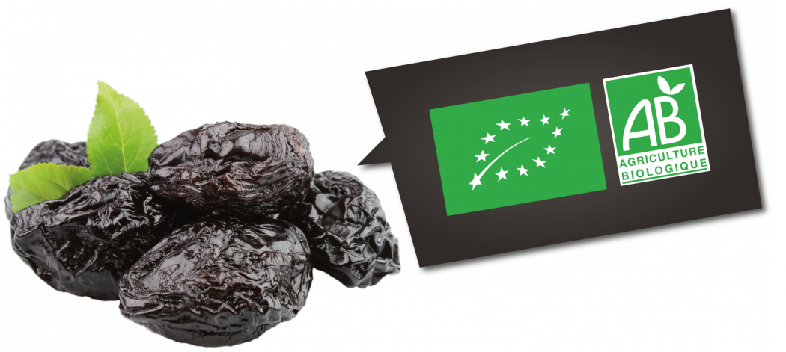

Savoir se présenter Fin. 自己紹介する。

Août, mi-septembre, une récolte 収穫しゅうかく, un parapluie 傘かさ, une prune スモモ亜属すももあぞく, mûr 食べ頃たべごろ, une feuille 葉っぱはっぱ, une branche 枝えだ, un scarabée 甲虫かぶとむし
une étuve 対流式オーブンたいりゅうしきおうぶん, sortir 出すだす, tourner 回すまわす, secher 乾かすかわかす, homogène 均質きんしつ, délicieux 美味しいおいしい
Nom de jeune fille : ＿＿＿＿＿＿＿＿＿＿ Nom de famille : ＿＿＿＿＿＿＿＿＿＿＿＿ Prénom(s) : ＿＿＿＿＿, ＿＿＿＿＿＿＿＿＿＿＿＿＿＿＿
Date de naissance : ＿＿/＿＿/＿＿ = ＿＿＿＿＿＿＿＿ Lieu de naissance : ＿＿＿＿＿＿＿＿＿＿＿＿＿＿＿＿＿＿ Nationalité : ＿＿＿＿＿＿＿＿＿＿＿＿＿＿＿＿＿＿
Numéro de téléphone : ＿＿ ＿＿ ＿＿ ＿＿ ＿＿ Adresse : ＿＿＿＿＿＿＿＿＿＿＿＿＿＿＿＿＿＿ ＿＿＿＿＿＿＿＿＿＿＿＿＿＿＿＿＿＿＿＿＿＿＿＿ ＿＿＿＿＿＿＿＿＿＿＿＿＿＿＿＿＿＿＿＿＿＿＿＿ Email : ＿＿＿＿＿＿@＿＿＿＿＿＿＿＿.＿＿＿＿
Fait à : ＿＿＿＿ Le : ＿＿/＿＿/＿＿ Signature : ＿＿＿＿＿＿＿＿＿＿
Merci d’être venu aujourd’hui !